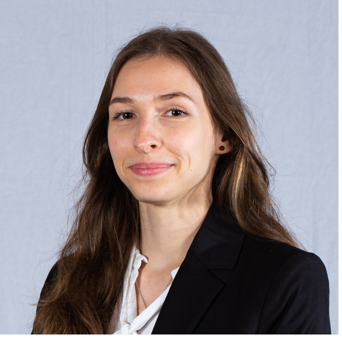

Welcome
PhD Student in MRI Physics — CEA Paris-Saclay, Paris-Saclay University
Researching ultra-high-field MRI for human brain metabolism, with a focus on CEST imaging from 7T to 11.7T and perspectives for integrating artificial intelligence.

I am a PhD student in MRI Physics at CEA Paris-Saclay and Paris-Saclay University, working under the supervision of Luisa Ciobanu. My research focuses on ultra-high-field MRI for human brain metabolism, specifically CEST (Chemical Exchange Saturation Transfer) imaging from 7T to 11.7T, with perspectives for integrating artificial intelligence.
With a background spanning engineering from École CentraleSupélec and computational neuroscience from Paris-Saclay University, I bridge the gap between physics, medical imaging, and deep learning. My doctoral fellowship was ranked first at the doctoral school competition. I am also passionate about science outreach and committed to making scientific knowledge accessible to wider audiences.
Learn more about my work and background
My education, professional experience, skills, and languages at a glance.
View CVBrowse my published research papers, conference proceedings, and articles.
View PublicationsConferences, science communication, and tutoring initiatives I am involved in.
View Outreach